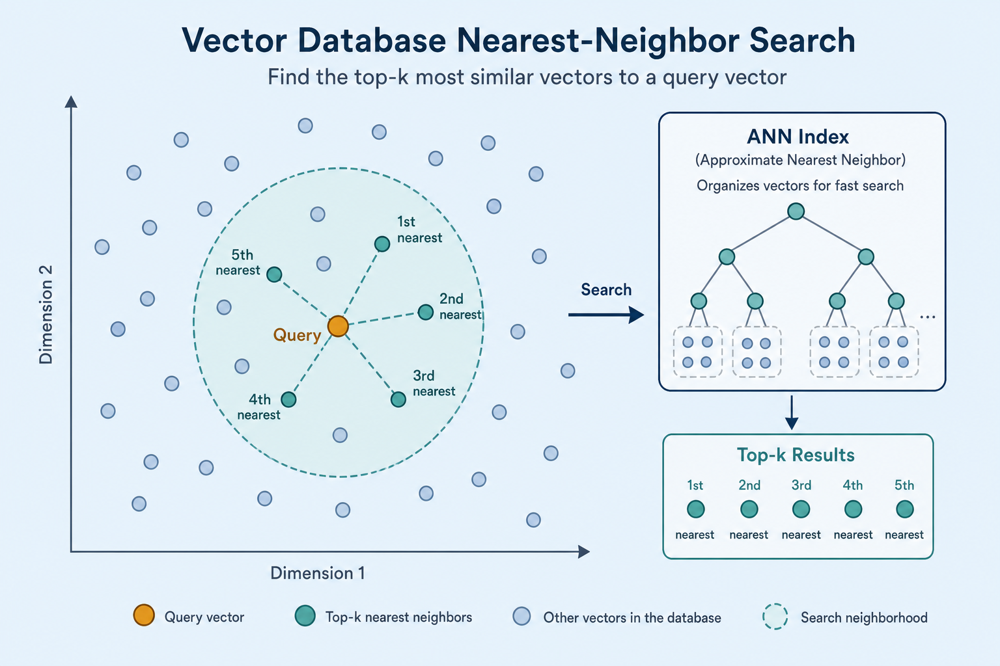
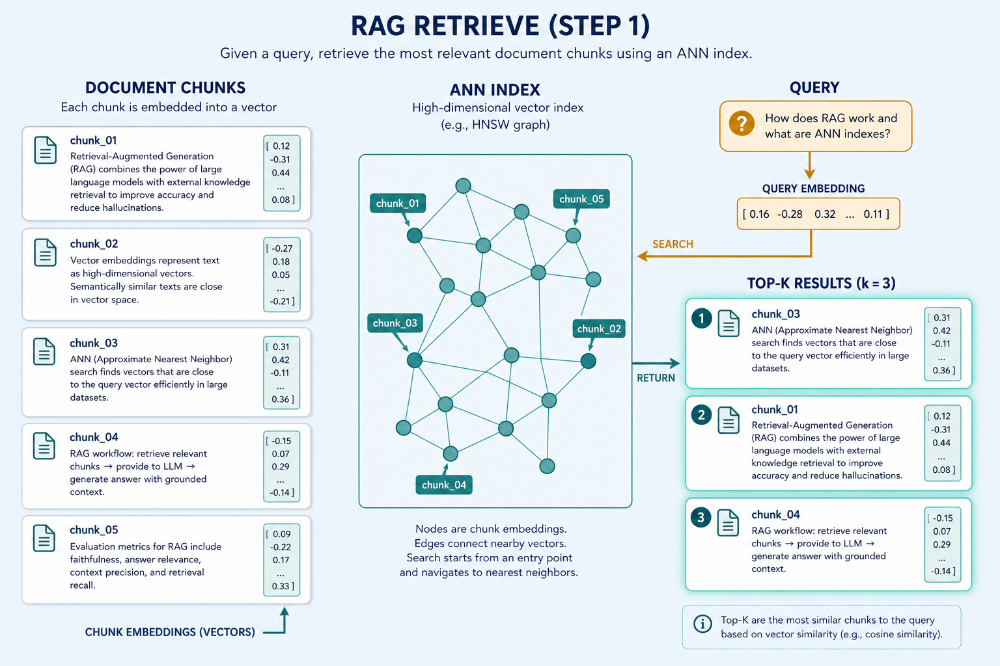
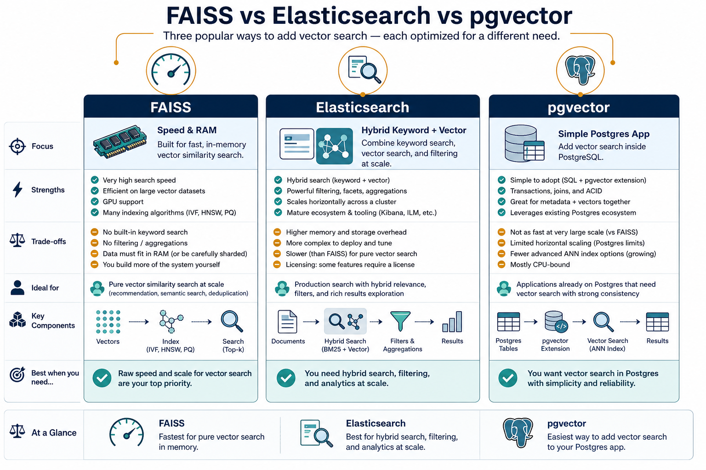

Vector Database · nearest meaning, fast
Store millions of embeddings and answer “which vectors are closest?” in milliseconds — the shelf under RAG.
Why brute force fails at scale
Nearest neighbor
Given a query vector, find the k closest by cosine or dot.
Scan is too slow
Comparing against every row collapses once the corpus grows.
ANN + metadata
Approximate indexes + filters make RAG and semantic search real.
Key ideas
HNSW · IVF · Flat
HNSW: M / efSearch. IVF: nlist / nprobe (+ PQ). Flat = exact baseline.
~200–400 tokens
Too big blurs topics; too small loses context. Store text+vector+meta.
Match training
Cosine-trained ⇒ cosine (or L2-norm + IP). Wrong metric = wrong rank.
Keywords: ANN · HNSW · FAISS · pgvector · Read: notes/vector-database.md
Pick by need
| Store | Strength | Weakness | Fit |
|---|---|---|---|
| FAISS | In-memory, very fast | Weak durable CRUD out of the box | Experiments, research |
| Elasticsearch kNN | Hybrid with keywords, scales out | Heavier ops | Production hybrid search |
| pgvector / Chroma | Simple, local-friendly | Not for huge clusters alone | Apps and demos |
Chunk → index → question → top-8
Chunk & encode
8k wiki chunks → 8000×384 (~12 MB). Same MiniLM both sides.
Upsert
(vector, text, source, date). HNSW build once; Elastic dense_vector field.
Query
Embed 1–5 ms → ANN top-8 (high efSearch) → filter → LLM.
Approximate nearest neighbors

Graph / cluster indexes skip most of the space — close enough, fast enough.
Index once, query many times

Offline: documents → vectors. Online: question → top-k neighbors.
Chunks → ANN → top-k

Each passage is a searchable point; retrieval returns the passages, not just IDs.
Embed the question, then query

Same encoder as the index — the retrieve step shared by RAG and semantic search.
Cosine vs dot product

Match the metric the embedder was trained with — or normalize, then use dot.
FAISS vs Elasticsearch vs pgvector

Speed research · hybrid + CRUD · relational home — pick the shelf that matches ops.
Deeper dive
Cost model
RAM ~ N·M·d. efSearch 32→128 lifts recall toward flat; latency ~linear — measure Recall@10.
Miss modes
Low nprobe skips the true cell. Train set ≠ traffic ⇒ bad list assignment.
Compress
4–16× smaller at 100M+ vectors; A/B vs float32 on a gold set before ship.
Mismatch
SBERT+L2, IP on unnormalized, Elastic cosine vs FAISS IP — “demo fine, prod random.”
Latency band
Embed 2–20 + ANN 1–30 + fetch 1–10 ms. Spikes: cold cache, huge k, heavy filters.
RRF join
BM25 + HNSW then fuse. Pure vector misses exact SKUs/IDs keyword catches.
When to choose what
| Situation | Prefer | Avoid / why |
|---|---|---|
| <50k vectors, prototype | Flat FAISS / Chroma / pgvector exact | Premature IVF/PQ — complexity without gain |
| Millions, high recall | HNSW + tuned efSearch | Tiny efSearch “because fast” — silent recall drop |
| Huge N, RAM-tight | IVF + PQ or disk engines | Pure in-RAM float32 HNSW — OOM |
| BM25 + vectors + CRUD | Elasticsearch / OpenSearch kNN | FAISS alone — reinvent ops + keyword |
| App already on Postgres | pgvector HNSW/IVFFlat | Extra DB unless scale demands it |
| Cosine-trained embeddings | Cosine space, or normalize + IP | L2 on raw SBERT — ranking distortion |
Case Study
Index an internal wiki (~8 000 chunks of 200–400 tokens) for RAG answer support.
Inputs
markdown pages → chunker → MiniLM 384-d normalized embeddings; metadata {source, date, product_area}.
Steps
upsert into HNSW (or pgvector/Chroma for the lab) → gold 50 questions with known passages → tune efSearch until Recall@10 ≥ 0.9 vs flat baseline → query path: embed question → ANN top-8 → filter date >= 2024 → return payloads to the LLM.
Output
interactive retrieve ~10–40 ms ANN + embed; RAG context pack of 8 chunks; ops runbook for full reindex when the embedding model changes.
Verify
dim/metric match at write and read; deleting a page removes all its chunk ids; ANN recall not silently tanked by tiny efSearch; hybrid BM25 still available for SKU/error-code queries.
Lab Checklist
Chunk a small document set and embed with a fixed sentence-transformer
Insert vectors + metadata into one store (FAISS, Chroma, or pgvector)
Query with a paraphrase and inspect top-k texts (not only scores)
Compare flat/exact search vs ANN on the same gold queries (Recall@10)
Raise/lower efSearch or nprobe and record latency vs recall
Apply a metadata filter and note empty-result behavior
Delete or update one source document and verify stale chunks are gone
Write the reindex rule: new embedding model ⇒ rebuild all vectors
Easy to go wrong
Stale / CRUD
Delete all chunk vectors per doc. Model upgrade ⇒ full reindex.
Under-tuned
Low efSearch / nprobe looks fast, drops Recall@10.
Filter order
Prefilter can empty candidates; postfilter may return <k hits.
Two paths into the same store
Where to go next
sentence-transformers
How vectors get produced for the index.
RAG
Top-k chunks into a grounded answer.
Semantic search
Combine keyword filters with ANN rank.
Read the note
then retrieve.
notes/vector-database.md — related demo: demos/rag.
Open note →